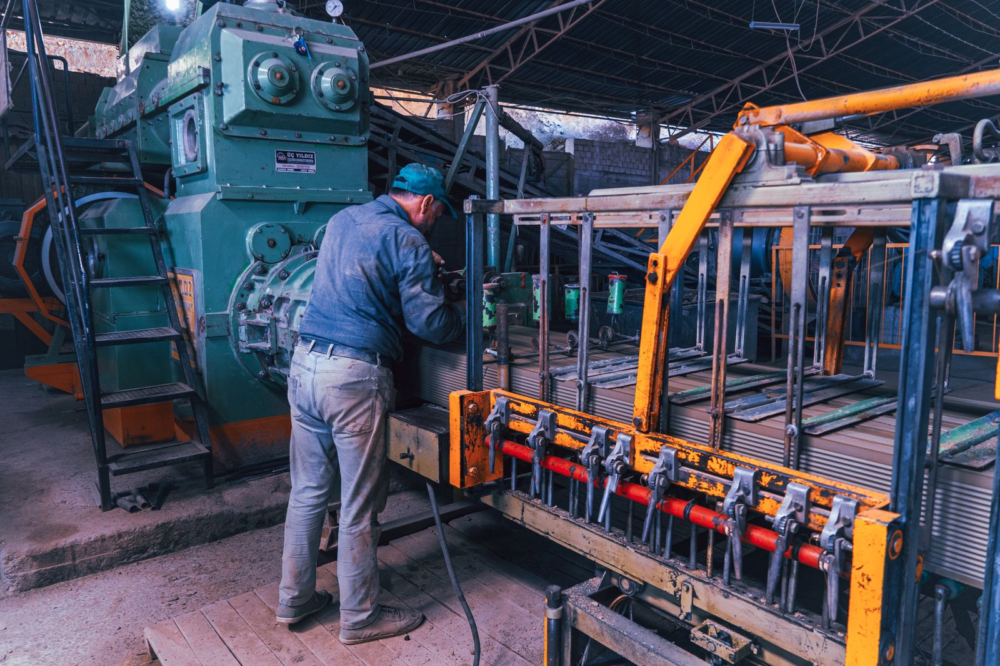
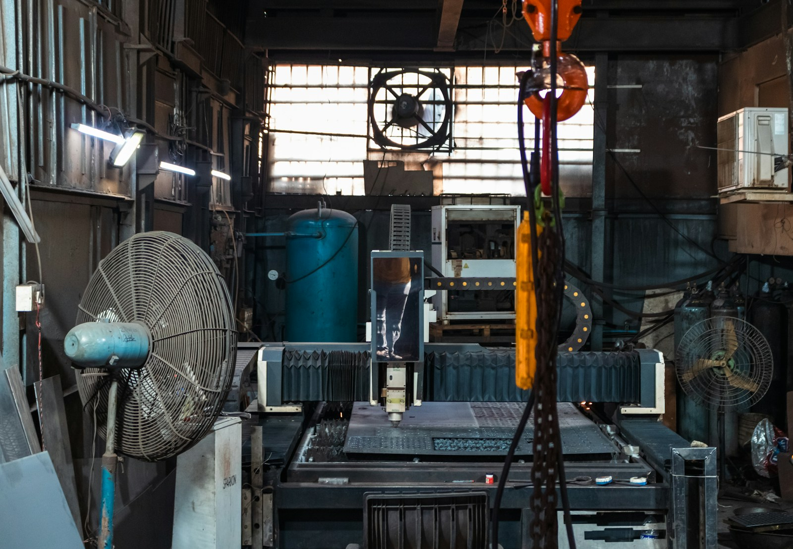
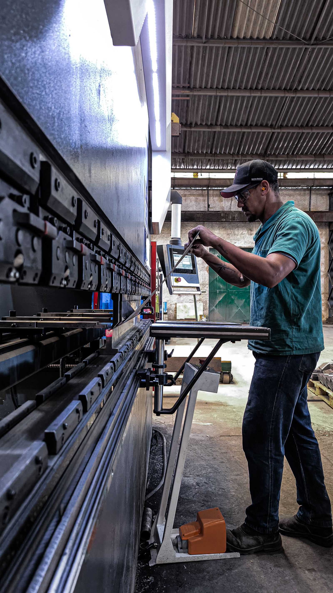

Specialist motor manufacture
One-off electric motors manufactured to customer specification, including furnace motors, brake motors and grinding spindles.
Specialists in electric rotating machines
Bespoke motors, pumps, repairs and precision modifications — backed by more than 60 years of hands-on engineering experience.
What we do
From a one-off specialist motor to an urgent rewind or pump repair, our experienced team provides practical solutions for demanding industrial applications.
One-off electric motors manufactured to customer specification, including furnace motors, brake motors and grinding spindles.
AC and DC motor repairs, stator and armature rewinds, plus remanufacture of damaged shafts and bearing housings.
Pump manufacture, supply and repair, including coolant pumps and site removal and refitting services.
Brakes, encoders, forced ventilation, stainless steel shafts, custom drive shafts, mountings and winding modifications.



Family owned. Engineering led.
For more than six decades, Electropower has solved motor and pump challenges for customers across British industry.
We combine traditional engineering knowledge with the flexibility to manufacture, modify and repair equipment around the exact needs of each application. When an off-the-shelf answer will not do, talk to us.
“Quality is remembered long after the price is forgotten.”
Industries we serve
Have a motor or pump challenge?
Speak directly with our engineering team about your requirements.
Call 01422 379570 →